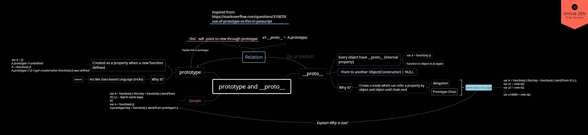

一切都运行在内存里
开机
- 操作系统在 C 盘（macOS 的在根目录下的多个目录里）
- 当按下开机键，主板通电，开始读取固件
- 固件就是固定在主板上的存储设备，里面有开机程序
- 开机程序会将文件里的操作系统加载到内存中运行
操作系统（以 Linux 为例）
- 首先加载操作系统内核
- 然后启动初始化进程，编号为 1，每个进程都有编号
- 启动系统服务：文件、安全、联网服务等
- 等待用户登录：输入密码登录/ssh 登录
- 登录后，运行
shell，用户就可以和操作系统对话了 bash是一种shell，图形化界面也可以认为是一种shell
打开浏览器
Chrome.exe
- 双击 Chrome 图标，就会运行 Chrome.exe 文件
- 开启 Chrome 进程，作为主进程
- 主进程会开启一些副主进程，如网络服务、GPU 加速
- 每新建一个网页，就有可能会开启一个子进程
Child Process
浏览器的功能
- 发起请求，下载 HTML，解析 HTML， 下载 CSS， 解析 CSS， 下载 JS， 解析 JS，执行 JS 等
- 功能模块：用户界面、渲染引擎、JS 引擎、存储等，网络模块（下载，上传）
- 上面功能模块一般各处于不同的线程（比进程小）
- 如果进程是车间，那么线程就是车间里的流水线
- JS 是单线程（不用
Workers Thread Module或Web Worker的话）
JS 怎么渲染
- JS 通过跨线程通信去渲染（Chrome 提供 API），慢于 JS 线程内的代码，所以
DOM操作慢
JS 引擎
JS 引擎举例
- Chrome 用的是
V8引擎，C++编写 - 网景用的是
SpiderMonkey，后 Firefox 继承使用，C++ - Safari 用的是
JavaScriptCore - Edge 用的是
Chakra(JavaScript) - Node.js 用的是
V8
主要功能
- 编译：把 JS 代码编译为机器能执行的字节码或机器码
- 优化：改写代码，使其更高效
- 执行：执行上面的字节码或机器码
- 垃圾回收：把 JS 用完的内存回收，方便之后再用
执行 JS 代码
打开控制台之前发生了什么
输入
window，得到一串东西
window在开控制台前就有了输入
console、object、setTimeout、document、navigator等，也一样在开控制台前就有了JS 引擎提供了什么
准备工作
- Chrome 提供 API：
window/document/setTimeout的对象等 - 上面的都不是 JS 自身具备的功能，只是通过 API 调用
- 将这些功能统称为运行环境
runtime env - 一旦把 JS 放进页面，就开始执行 JS
等一下
JS 代码在哪里运行？
- 内存
内存哪？
内存图
内存被不同的程序瓜分
浏览器程序（以 Chrome 为例）怎样瓜分内存
开启许多不同的进程Processes
- OS 占据一小部分
- Chrome 主进程
- Chrome 辅助主进程
- Chrome 的 Tab1（zhiHu）
- Chrome 的 Tab2（xdml）
- Chrome 的 Tab3…
其中Tab1又可细分为(许多线程Threads)
- 用户界面
- 渲染线程
- JS 引擎（代码区、未知区、数据区<{ 栈区 Stack、堆区 Heap }>等等）
- 代码区
- 未知区（存变量名，环境），具体值存入数据区（Stack 或 Heap）
- 数据区（Stack 和 Heap）
- 栈区 Stack 连续存储
- 堆区 Heap 链接存储
数据区（Stack连续存储区和Heap链接存储区）
作用
- 专用来存放数据
- 并不存变量名，变量名在未知区
- 每种浏览器的分配规则不同，未知区的名字也不同
- 并不完整
- 未画出「调用栈」、「任务队列」、「垃圾回收」等区域
Stack 和 Heap
- Stack 堆和 Heap 堆
- 解释「栈」需要数据结构相关知识
- Stack 区特点：每个数据顺序存放
- Heap 区特点：每个数据随机存放
Stack 和 Heap 代码举例
代码
|
|
规律
- 数据分两种：非对象（数字、字符串、布尔值）和对象
- 非对象都存在
Stack - 对象都存在
Heap，开辟一块空间存 - 对象里只可存非对象或另一对象的引用地址
- 另一对象需开辟
Heap一块新空间存 =总是把右边的东西复制到左边（不存在什么传值和传址）
区分值和地址
内存图里见分晓
对象被篡改了
|
|
JS 世界
JS 要些什么
- 浏览器提供
window，可以在控制台里打出window.xxx - 要
console，并挂到window上，打console或window.console，后面一样 - 要
document，并挂到window上 - 要对象
Object，并挂到window上（var person = {}就等价于var a = new Object()） - 要有数组
Array（一种特殊对象），并挂到window上（var a = [1,2,3]等价于var a = new Array(1,2,3)） - 要有函数
Function（一种特殊对象），，并挂到window上（function f(){}等价于var f = new Function()） - 等
var a = [];function f(){}用字符字面量代码量上更少，其他都一样
怎么都挂在
window上因为方便，挂在
window上的东西，可以在任何地方直接用，即省略window.，只有window有这功能
内存图表示window
Tab1
- 用户界面
- 渲染引擎
- JS 引擎
其中 JS 引擎
- 代码区
- 未知区：
window
未知区里的window的数据
Stack：#90（对应window地址）Heap
其中Heap
- 排名不分先后
#28:(存了log: #200)#105:(存了函数代码)#200:(存了函数代码)#90:(存了console: #28和Object: #105)
另一种画法
window 保存着以下地址（俗称指向/引用）
consoleObjectArray
console
logclear
Object
函数实现
keysprototype
Array
函数实现
isArrayprototype
可以在控制台打
console.dir(window.Object)查看对象首字母大写，一般都有’prototype’属性
细节
关于window
window变量和window对象是两个东西window变量是一个容器，存放window对象的地址window对象是Heap里的一坨数据- eg.
var x = window，那么这个 x 就指向了window对象，和window变量的作用相同
同理
console和console对象不是一个东西Object和Object函数对象不是一个东西- 前者是内存地址，变量名，存在未知区，对象里只保存引用地址
- 后者是一坨内存，存在数据区的堆区
Heap里 - 举例：
window.jQuery = function(xxx){} - 然后
var $ = jQuery - 调用
$.xxx（）
原型链
window.Object.prototype
console.dir(window.Object.prototype)
window.可省略
看代码举例解释 1
|
|
空对象的
toString为什么可以运行，不报错
obj有一个隐藏属性- 隐藏属性存储了
Object.prototype对象的地址 obj.toString()发现 obj 上没有toString就去隐藏属性对应的对象里找，找到
Object.prototype.toString1 2 3 4var obj = {} obj.toString === window.Object.prototype.toString //true var arr = [] arr.push === window.Array.prototype.push //true
看代码举例解释 2
|
|
obj和obj2的联系
- 都可调用
.toString() - 地址不同
obj !== obj2 - 可以拥有不同属性，反过来就是没有共同属性，就得每次重写
XXX.prototype存储了XXX对象的共同属性这就是原型
原型链作用
可无需重复声明共有属性
省代码，省内存
隐藏属性__proto__
每个对象都有一个隐藏属性，指向共有属性，即使是
Object本身小写的对象名，才去关心隐藏属性
__proto__大写的对象名，只要知道，通常都有一个
prototype属性 ，不用去关心大写对象名的对象的隐藏属性__proto__指向原型（对象）
prototype和__proto__区别是
- 都存着原型的地址
prototype挂在函数（大写Object）上__proto__挂在每个新生成的对象上prototype是构造函数的属性，而__proto__是对象的属性，一般意义上的【实例的原型】prototype指向一块内存，这个内存里面有共用属性__proto__指向同一块内存
prototype 的意义就是把共有属性预先定义好，给之后的对象用。
prototype是一个属性，__proto__才是原型，__proto__是非标准用法，不是所有的 JS 引擎都支持

看代码举例解释 3
|
|
以上是只有读的时候符合的情况，改的逻辑不一样，即改默认隐藏属性，两层引用只会走一层，无法直接篡改
- 图解

arr有个隐藏属性- 隐藏属性存储了
Array.prototype对象的地址 arr.join()发现arr上没有join- 就去隐藏属性对应的对象里找
于是找到了
Array.prototype.join1 2 3 4 5 6var obj1 = {} var obj2 = {} obj1.toString === obj2.toString //true obj1.toString = 'xxx' obj2.toString // < toString(){[native code]} obj1.toString === obj2.toString //false
问：
arr.hasOwnProperty()怎么找到内存中的地址找三次，最后找到 Object 的
hasOwnProperty
How JavaScript works: inside the V8 engine + 5 tips on how to write optimized code
Node.js 真·多线程 Worker Threads 初探
JS 中 __proto__ 和 prototype 存在的意义是什么